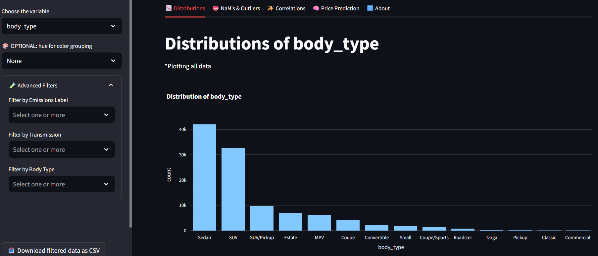
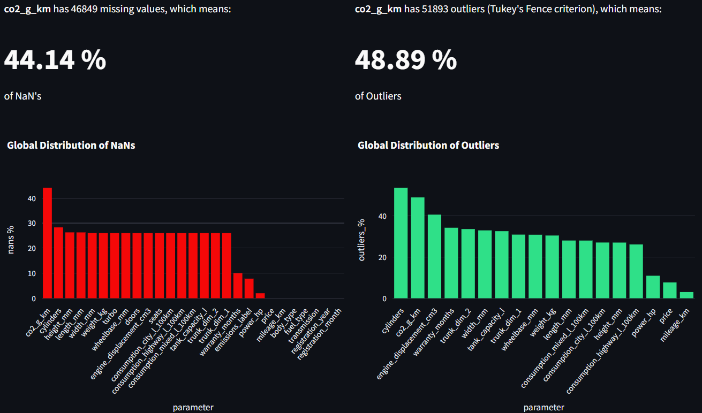
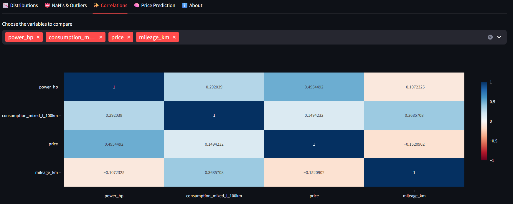
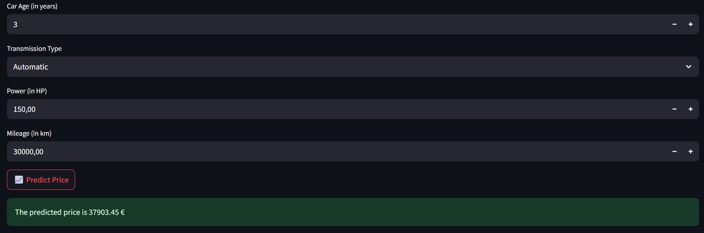

01. The idea
How much should a used car cost? The answer depends on many factors, from its age and mileage to its engine power and transmission type. This project explores those relationships and uses Machine Learning to estimate a car's market price.
The project started as one of several exercises during the HACK A BOSS bootcamp and evolved into a more complete workflow. I worked with a dataset scraped from Autocasión, cleaned and prepared the data, compared different regression models, and built a Streamlit application so users could explore the dataset and try their own predictions.
The final application brings together two goals: understanding the data behind used car prices and making a trained model accessible through a simple interface.
02. From raw data to a model
The project was developed through a series of Jupyter notebooks, each covering a different stage of the Machine Learning workflow.
Data cleaning and preparation
The first step was to transform the scraped dataset into a format suitable for analysis. This involved handling missing values, removing duplicate records, translating column names into English and converting variables to appropriate data types.
Outlier detection
I used Tukey's Fences, based on the interquartile range (IQR), to identify potential outliers in numerical variables. This method was useful for investigating unusually high or low values in a dataset with strongly skewed distributions.
The analysis helped identify where unusual observations were concentrated and provided a clearer picture of the data before modelling.
Encoding and feature engineering
Machine Learning models require numerical inputs, so categorical variables were encoded using techniques such as Label Encoding and One-Hot Encoding. I also applied logarithmic transformations to highly skewed variables, including mileage, engine power and price, where appropriate.
Missing values were addressed as part of the modelling workflow using KNN imputation, alongside numerical scaling and the preparation of model-ready features.
03. Comparing Machine Learning models
I evaluated several regression algorithms to determine which could best predict used car prices. The initial comparison included Linear Regression, Random Forest, Decision Tree, K-Nearest Neighbors, AdaBoost and Gradient Boosting.
The models were compared using three evaluation metrics:
- MAE (Mean Absolute Error): the average absolute difference between predicted and actual prices, expressed in euros.
- RMSE (Root Mean Squared Error): a measure that penalises larger prediction errors more heavily.
- R² (Coefficient of Determination): an indication of how well the model explains variation in the target values.
Random Forest performed best in the initial model comparison. I then explored hyperparameter tuning and feature importance to improve the modelling workflow and identify the most relevant vehicle characteristics.
For the final application, I developed a reduced model using four features. Its evaluation metrics were:
- MAE: €3,125.29
- RMSE: €5,085.46
- R²: 0.82
The MAE represents the average absolute prediction error, while the RMSE penalises larger errors more heavily. An R² score of 0.82 indicates that the model explains a substantial proportion of the variation in prices in the evaluated data.
The model was developed using 50% of the available dataset because of computational resource limitations. These metrics should be interpreted in the context of the data and evaluation setup.
04. Simplifying the prediction
The initial modelling workflow considered a broader set of vehicle characteristics. However, asking users to provide many technical details would make the application less convenient to use.
I therefore developed a reduced model based on four features identified as important for the prediction task:
- Car Age: the vehicle's age in years.
- Transmission: manual or automatic.
- Power: engine power in horsepower (HP).
- Mileage: distance driven in kilometres.
The prediction function applies logarithmic transformations to power and mileage, encodes the transmission type as a binary variable, and converts the model's predicted log-price back into euros.
The result is a more practical interface: users can enter four familiar vehicle characteristics instead of having to provide a long list of technical specifications.
05. The Streamlit application
I built an interactive web application with Streamlit and Plotly to make both the exploratory analysis and the prediction model accessible without having to run the notebooks manually.
Explore distributions
Select a variable to inspect its distribution. For numerical variables, the application displays histograms, scatter plots against price, box plots and descriptive statistics. Categorical variables can be explored through bar charts.

Optional colour grouping, or hue, makes it possible to compare groups within a chart. Advanced filters let users narrow the dataset by emissions label, transmission type and body type. Filtered data can also be downloaded as a CSV file.
Investigate missing values and outliers
A dedicated section reports the number and percentage of missing values for each variable, together with outlier counts estimated using Tukey's Fence criterion. This makes it easier to spot data quality issues and understand how the dataset is distributed.

Compare correlations
Users can select numerical variables and inspect their correlation matrix through an interactive heatmap. This helps reveal linear relationships between features and identify patterns worth investigating further.
Correlation does not imply causation, but it can provide useful clues during exploratory data analysis.

Predict a car's price
The prediction tab asks for the car's age, transmission, engine power and mileage. After submitting these inputs, the application returns the estimated price in euros.

Input ranges are provided in the application to help users stay within the supported values of the model.
Review the model
The About section provides background information about the project and displays the model's evaluation metrics: an MAE of €3,125.29, an RMSE of €5,085.46 and an R² score of 0.82.
This gives users some context for interpreting the predictions rather than treating the estimated price as an exact valuation.
06. Technologies and workflow
The project separates the data analysis workflow from the reusable functions used to generate charts, calculate descriptive statistics, detect missing values and outliers, and run the prediction model.
- Python: the main programming language used throughout the project.
- Pandas and NumPy: data manipulation and numerical operations.
- Scikit-learn: regression models, preprocessing and model evaluation.
- Joblib: loading the saved prediction model.
- Streamlit: building the interactive web application.
- Plotly: creating interactive charts and visualisations.
- Jupyter Notebooks: organising data cleaning, outlier analysis, encoding, feature engineering, model comparison and tuning.
07. What I learned
This project gave me the opportunity to practise the complete workflow behind a regression problem, rather than focusing exclusively on model training. It reinforced the importance of data quality, preprocessing, feature engineering and evaluating models with multiple metrics.
It also highlighted the trade-off between predictive performance and usability. A model can use many features, but a simpler input interface can make it much easier for people to try and understand.
Building the Streamlit application was another important part of the experience: it turned the results of the notebooks into an interactive tool where users can explore the data, investigate relationships and test predictions themselves.
08. Limitations and disclaimer
This project was developed as a practical learning exercise. The underlying data was scraped in 2024, so the model may not reflect current used car market prices. Vehicle prices can change over time and vary with condition, location, equipment and other factors that may not be captured by the four-feature model.
The model was trained on half of the available dataset because of computational constraints. Training and validating with the full dataset, and evaluating predictions on more recent market data, would be useful next steps.
Predictions are estimates for educational purposes, not professional valuations or financial advice. They should not be relied upon as the sole basis for buying or selling a vehicle.
09. Future improvements
There are several ways this project could be taken further:
- Expand model training: use the full dataset and evaluate whether additional training data improves predictive performance.
- Refresh the data: incorporate more recent listings to better reflect changes in the used car market.
- Improve validation: test the model on newer, independent data to assess how well it generalises to current prices.
- Explore API integration: develop and deploy a REST API with FastAPI to make price predictions available to other applications.
10. Explore the project
Try the application to explore the dataset, investigate variable relationships and estimate the price of a used car. You can also browse the source code to see how the data preparation and modelling workflow was developed.